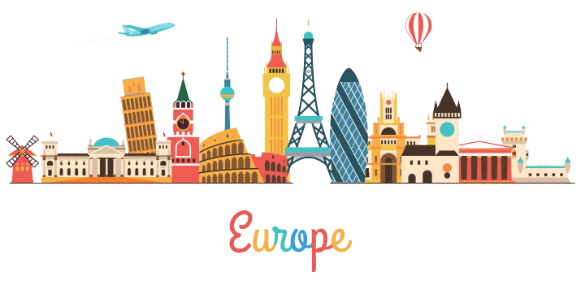

Мы учим иностранные языки, чтобы преуспеть
в карьере, уехать в другую страну или
просто потому, что нам нравится этот язык и
культура его носителей. Между тем изучение
языков несет в себе огромную пользу для
нашей психики и для развития мозга.
Любопытно, что с этой точки зрения лучше
владеть несколькими языками не в совершенстве,
чем выучить один иностранный досконально.

Те, кто владеет несколькими языками, быстрее и легче приспосабливаются к неожиданным изменениям обстоятельств